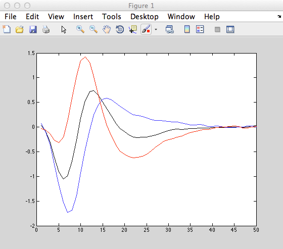

Matlab computer code associated with the paper
McFarland JM, Cui Y, Butts DA (2013) Inferring nonlinear neuronal
computation based on physiologically plausible inputs.
PLoS Comput Biol 9:e1003143
http://dx.doi.org/10.1371/journal.pcbi.1003143
and installation instructions are available at the authors web site:
http://www.clfs.umd.edu/biology/ntlab/NIM/
The first demo program, NIMdemo_RGCsim.zip, for example reproduces
figures 1 and 3 in the manuscript, e.g. figure 1C:

ModelDB Administrator installation note: The files suggested to be
installed from the above web runs under Matlab r2013a and Xcode 5.1.1
as long as the following revision is made to
/Applications/MATLAB_R2013a.app/extern/include/tmwtypes.h: The line:
typedef char16_t CHAR16_T;
needed to be changed to
typedef UINT16_T CHAR16_T;
as suggested in a stackoverflow note to prevent the Matlab mexAll
compilation error:
...
/Applications/MATLAB_R2013a.app/extern/include/tmwtypes.h:819:9: error: unknown type
name 'char16_t'
typedef char16_t CHAR16_T;
^
1 error generated.
mex: compile of ' "minFunc/mcholC.c"' failed.